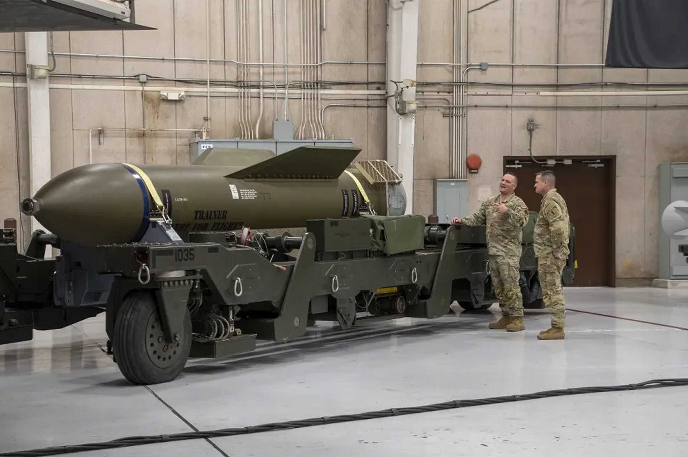
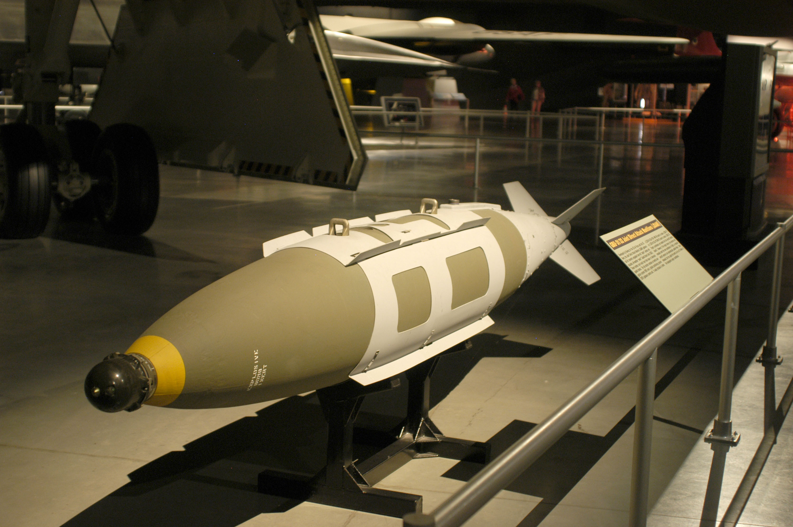
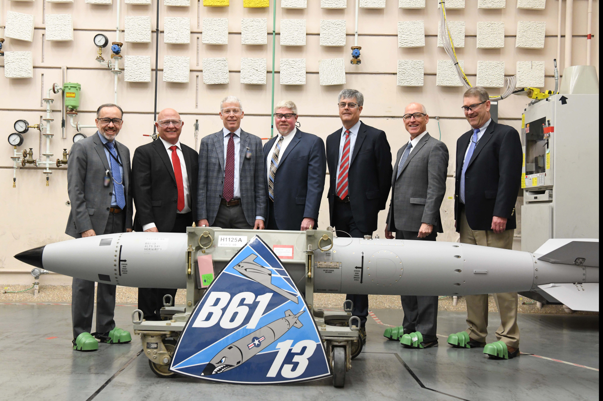
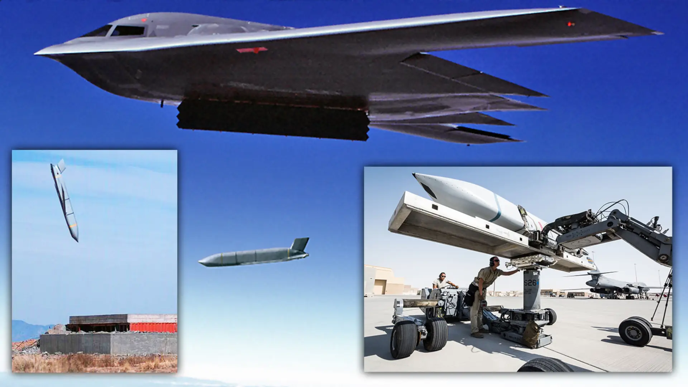

GBU-57 MOP
~14 tonnes · anti-bunker
La massue perforatrice. Elle traverse le béton et la roche avant d'exploser au cœur des cibles enterrées.
Northrop B-2 Spirit
Il frappe à 1 000 km, puis s'efface.
Le B-2 emporte deux familles d'armes très différentes : des bombes, larguées à la verticale de la cible, et un missile de croisière standoff, tiré à très longue distance pour que l'avion n'entre jamais dans la défense ennemie.

~14 tonnes · anti-bunker
La massue perforatrice. Elle traverse le béton et la roche avant d'exploser au cœur des cibles enterrées.

~28 km · guidage GPS
Un kit de guidage greffé sur des bombes classiques. Précision métrique, par tous les temps, de jour comme de nuit.

nucléaire · gravité
Les bombes de la dissuasion stratégique. Puissance réglable, larguées en haute altitude.

plus de 1 000 km · missile de croisière furtif
L'arme du « tir à distance ». L'avion lance le missile à plus de mille kilomètres de l'objectif, puis fait demi-tour sans jamais entrer dans la portée des défenses adverses. Il frappe, puis s'efface.